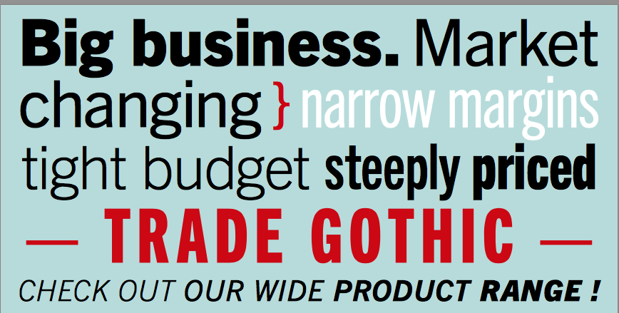

Influencias
Desde joven tenía muy claro a lo que se quería dedicar...
Su historia con el diseño comenzó siendo adolescente, aunque le gustaba dibujar su mayor diversión era componer o maquetar una cosa con otra, uniendo piezas que últimamente terminaba siendo lo que actualmente llamamos ‘creación de contenido’.
Una de sus mayores inspiraciones fueron revistas, como por ejemplo: Spec 16, Archie comics, Mad Magazine y la cultura de ‘celebrities’ de la época que seguía a músicos y actores como: Jackson 5, Osmond Brothers y Partridge Family. Desde joven Gail creaba pequeñas revistas con recortes de imágenes de sus revistas favoritas y las combinaba junto a historias, titulares y dibujos de invención propia. Ella se preguntaba cómo podía hacer esto como su profesión.
Fue animada a tomar clases de dibujo en el Pratt de Manhattan por Miss Francis de su instituto Spellman, quien también le recomendó asistir a la School of Visual Arts (SVA) para sus estudios superiores. Esto se ligó a que en su aula artística había un cartel del SVA diseñado por Paul Davis de los años 70 que decía “Ser bueno no es suficiente cuando sueñas ser excelente.” Basado en este cartel, Gail supo que quería ir allí para sus estudios. En el instituto participó en actividades relacionadas con el diseño como: la creación del anuario, el periódico y la revista escolar. Desde joven tenía muy claro a lo que se quería dedicar.
Algunas de sus piezas favoritas de diseño son:
La tipografía Trade Gothic que considera utilitaria y robusta, como una vieja amiga que nunca falla. En cuanto a gráfico le encanta el poster de Donald Brun de alrededor de 1955 para Zwicky, una marca famosa de algodón suizo. Y en producto el Ford Mustang, el coche de su adolescencia, que nunca tendrá un igual en cuanto a estilo para ella.
Libro de recortes hecho por Gail.
Revista Spec 16.
Cartel con cita de la School of Visual Arts.
Cartel Zwicky por Donald Brun.

Tipografía Trade Gothic.